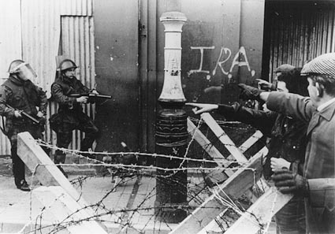

'Bloody Sunday' refers to the events that took place in Derry on the afternoon of Sunday 30 January 1972. A Northern Ireland Civil Rights Association (NICRA) march had been organised to protest against the continuation of Internment without trail in Northern Ireland. An estimated 20,000 men, women and children took part in the march in a 'carnival atmosphere'. The march was prevented from entering the city centre by members of the British Army. The main body of the march then moved to 'Free Derry Corner' to attend a rally but some young men began throwing stones at soldiers in William Street.
Soldiers of the Parachute Regiment, an elite regiment of the British Army, moved into the Bogside in an arrest operation. During the next 30 minutes these soldiers shot dead 13 men (and shot and injured a further 13 people) mainly by single shots to the head and trunk. 
The soldiers responsible for the deaths and injuries that day insisted that they had come under sustained gun and bomb attack by members of the Irish Republican Army (IRA) and only fired at people in possession of weapons. Those involved in the march, and those who witnessed the events, all provided evidence that ran contrary to the evidence given by the soldiers. According to these testimonies none of those killed or injured had any guns or bombs.
The events of 'Bloody Sunday' caused a lot of shock and revulsion at an international level. Within Ireland the killings resulted in a dramatic increase in support for Republicanism in general and the IRA in particular. The appeal for a fresh inquiry into events on that day was a central demand of the relatives campaign, and the events of 'Bloody Sunday' remain an emotive issue. This is in contrast to a number of other major incidents involving paramilitary groups which do not attract the same level of media attention. Part of the reason for this difference is the fact that the Widgery Report into 'Bloody Sunday' left doubts about the innocence of those killed whereas no such doubts are attached to those killed, for instance, in the Enniskillen bombing. Those who died in other major incidents were killed by members of various paramilitary groups. However, in Derry it was state forces, in the form of the British Army, the very people who were meant to protect life and uphold law, order and justice, who carried out the killings.